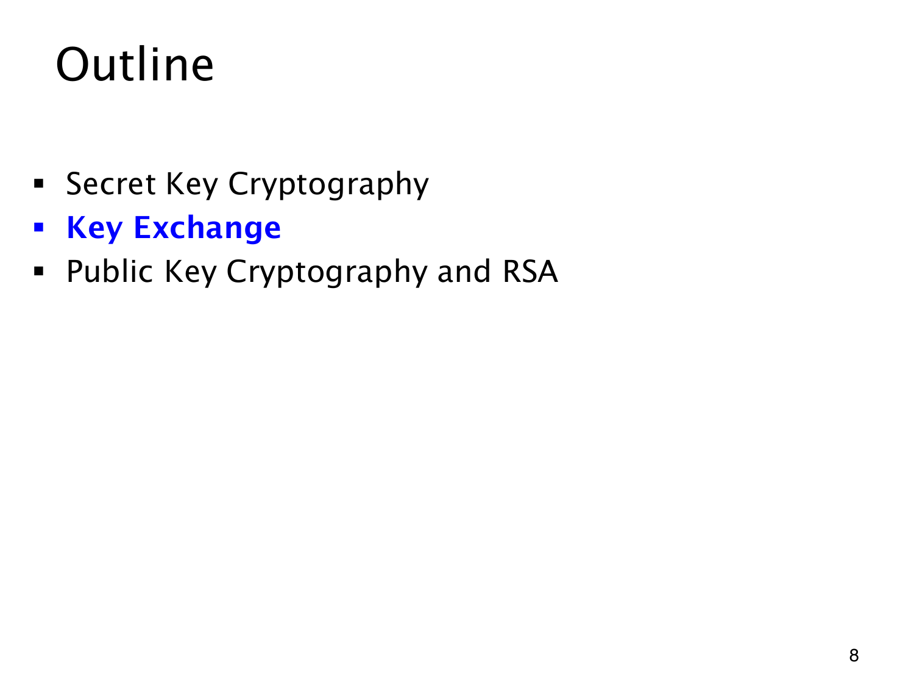

L1.14 · 第 8 页讲解原文
查看这一页课件

加密之前，共同密钥怎样建立
若 Bob 把密钥直接明文发给 Alice，窃听同一渠道的人也能取得它，后续加密便失去意义。此前的秘密密钥方法都假设共同密钥已经安全建立，还没有解决这一步。
目录现在以蓝色标出 Key Exchange（密钥交换）。这一部分研究建立共同秘密，使用该秘密加密大量消息则是之后的另一项任务；公钥密码和 RSA 仍在第三部分。
这页尚无交换公式。阅读接下来的协议时，需要分清哪些值公开发送、哪些由各自私下保留，以及双方最后计算出的共享值是什么。